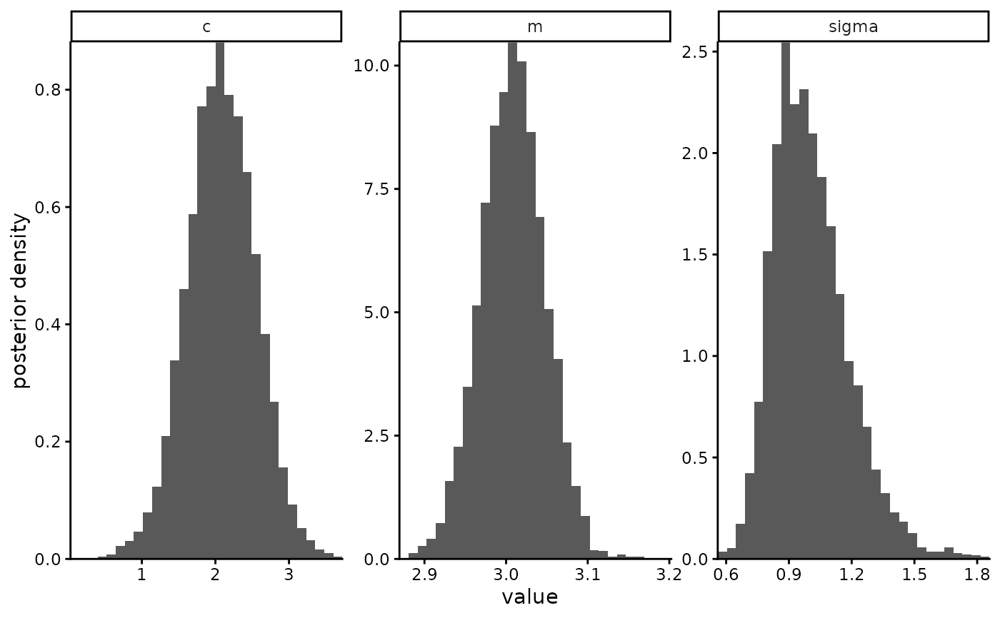
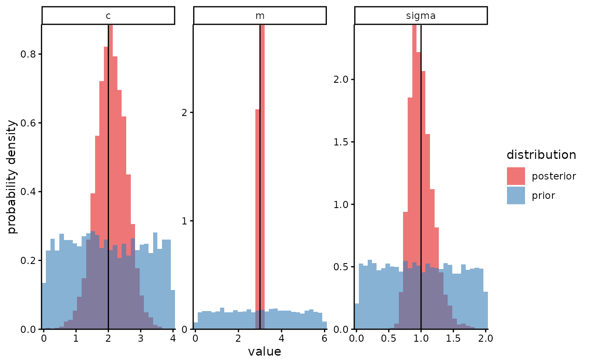

Plots the marginal posteriors of each parameter in a stanfit object
Source:R/plot_posterior.R
plot_posterior.RdPlots the marginal posteriors of each parameter in a stanfit object
Usage
plot_posterior(
posterior_samples,
prior_samples = NA,
true_param_values = NA,
params_desired = NA,
transforms = NA,
labels = NA,
lower = NA,
upper = NA,
nrow = NA,
ncol = NA,
skip_stanfit_to_dt = NA,
bins = 30
)Arguments
- posterior_samples
A stanfit object e.g. as returned by
rstan::sampling(). This should contain samples from the posterior.- prior_samples
A stanfit object containing samples from the prior, so that the prior and posterior distributions are overlaid. The default value of NA means only the posterior is plotted.
- true_param_values
A named numeric vector: the names are those of parameters, and the values are the true values (known from simulation truth). Using this argument means the output plot will include vertical lines at the true values. The default value of NA means no such lines are included.
- params_desired
A character vector of parameter names. Using this argument means only named parameters will be included in the plot. The default value of NA means all parameters are included.
- transforms
A named list of functions, with the names being parameter names. Using this argument means each parameter named in this list will be transformed by applying the associated function to its sampled values before plotting. e.g. specifying
list(x=log)would result in thelogfunction being applied to all values of parameter"x". Note that the names of parameters as they appear in the plot are not updated to reflect the functions applied, therefore this argument should usually be used together with thelabelsargument. The default value of NA means no transforms are applied to any parameter.- labels
A named character vector, with the names being the names of parameters as they are named within the stanfit object, and the values being new names to use instead. e.g. if
transforms=list(x=log)were specified,labels=c(x="log(x))"would make sense, so that the label of the plot of the posterior for x reflects the log transformation.- lower
A lower value for the x axis for one or more params. Any sampled values that are less than
lowerare increased to exactly equallower, such that the left-most bin of the histogram will occur atlowerand will contain the overflow. Use this arg to specify either a single value to be used for all params, or a named numeric vector whose names are params.- upper
An upper value for the x axis for one or more params. Any sampled values that are greater than
upperare decreased to exactly equalupper, such that the right-most bin of the histogram will occur atupperand will contain the overflow. Use this arg to specify either a single value to be used for all params, or a named numeric vector whose names are params.- nrow, ncol
Number of rows and columns for how the individual plots for each parameter are arranged into a grid. Passed to
ggplot2::facet_wrap().- skip_stanfit_to_dt
If this argument is set to
TRUE, theposterior_samplesargument (and theprior_samplesargument if used) should be used to provide a datatable of samples instead of a stanfit object of samples, for example after having already runstanfit_to_dt()on the stanfit objects. This allows e.g. manual renaming of parameters before plotting.- bins
A positive integer for the number of bins, passed to
ggplot2::geom_histogram(). The default is 30.
Examples
eg <- mastiff::stan_example_regression
plot_posterior(eg$posterior_samples)

plot_posterior(eg$posterior_samples,
prior_samples = eg$prior_samples,
true_param_values = eg$true_values)
